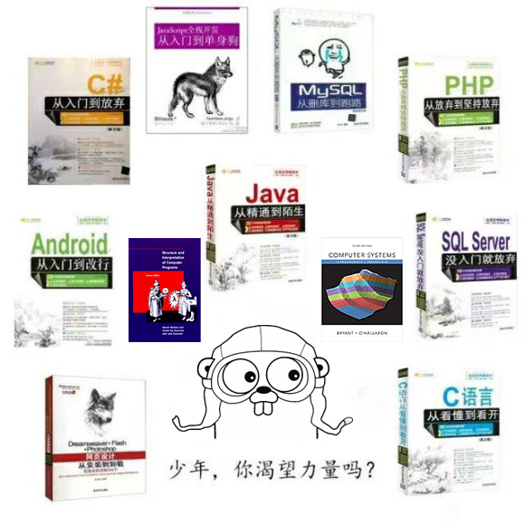

  <h2>Hi there 👋, I'm Wang Hongyan (lWoHvYe).</h2>

  <ul>
    <li>🌱 I have been working as a Java Developer for a few years. 📫 lwohvye@outlook.com</li>
  </ul>
  <style>
      table {
          border-collapse: collapse;
      }
      td {
          border: 1px solid #000; /* 设置边框样式，颜色为黑色 */
          padding: 8px; /* 设置单元格内边距 */
      }
      td:nth-child(1) {
          color: purple; /* 第一列的文字颜色为蓝色 */
      }
      td {
          font-weight: bold; /* 设置字体为粗体 */
      }
      .blue {
          background-color: blue;
      }
      .red {
          background-color: red;
      }
      .green {
          background-color: lightgreen;
      }
  </style>
  
  <table>
      <tbody>
          <tr>
              <td>Expert</td>
              <td style="color: #FF0000;">NaN</td>
              <td class="red"></td>
              <td class="blue"></td>
          </tr>
          <tr>
              <td>Advanced</td>
              <td style="color: #FF0000;">NaN</td>
              <td class="blue"></td>
              <td class="red"></td>
          </tr>
          <tr>
              <td>Intermediate</td>
              <td style="color: #b07219;">Java</td>
              <td class="green"></td>
              <td class="green"></td>
          </tr>
          <tr>
              <td>Novice</td>
              <td style="color: #555555;">C</td>
              <td style="color: #A97BFF;">Kotlin</td>
              <td class="green"></td>
          </tr>
          <tr>
              <td>Awareness</td>
              <td style="color: #00ADD8;">Go</td>
              <td style="color: #1e4aec;">Scheme</td>
              <td style="color: #41b883;">Vue</td>
          </tr>
      </tbody>
  </table>
  
  <div align="left">
    
  </div>
  
  <p>
    
  </p>
  
  <!-- 了解 (Awareness)：知道该语言，但在没有帮助的情况下无法编写简单的程序 -->
  
  <!-- 新手 (Novice)：可以用该语言完成简单的编程项目，可能需要帮助 -->
  
  <!-- 中级 (Intermediate)：可以在一些帮助下完成重要的编程项目 -->
  
  <!-- 高级 (Advanced)：可以在没有帮助的情况下完成重要的编程项目 -->
  
  <!-- 专家 (Expert)：可以提供指导、故障排除和回答其他工程师与该语言相关的问题 -->